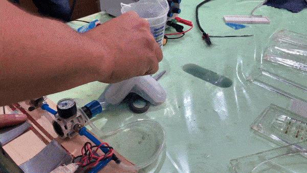

WEEK XV
Molding & Casting
Explorations for this section started from one week and entailed onto another class a few weeks later. Basic components and principles of molding and casting were explained previously, but it sparked my actual interest during the Soft Robotics class. I have been really interested in tensegrity and meta-objects, so forms molded using silicon did it for me. In terms of knowledge and skills, I actually ended up applying these for the last Micro Challenge.

Fig. 15.1 (left to right) The silicon used for prototyping components, one of the meta-forms using tension to grab onto objects, the same in action
My group explored how ancient traditional crafts and techniques have transformed our cultures and ways of life for centuries. Within these past few generations, the world has become hyper-globalised, industrialised, and digitised. Not only does this take a heavy impact on the world, we also lose our material connection and the stories of materials while inviting various crises. Drawing inspiration from ancient knowledges from three different localities around the globe, we reflect on how past traditions can be used to imagine and speculate on the rituals of our future.
My analogy explored how the dinner plates of the future might be self-arranging or modular in a way to make the act of eating more interesting, while requiring lesser resources to clean.
For the series of artefacts, I designed and prototyped 'S'il vous plate' that requires lesser resources and water to clean, while focusing on how the water-shortage crisis might look like in the future. The idea came from a few simple principles of physics around volumes and surfaces. Since wiping surfaces requires lesser resources in comparison to scrubbing volumetric shapes, I fabricated the plate out of silicon stretched within a 3D-printed PLA frame. The idea intended to study how material would flow in the frame if the silicon base changed shape in accordance to elevations and depths. This silicon plate is supposed to sit on a table and acquire the shape underneath it every-time its used.

To get a deeper understanding of the physics and it's working, tools like Grasshopper and Kangaroo were used to script and generate a few parametric shapes. The steps that entailed are as following:
1. First step involved using a circular Poly surface with singular and then series of anchor-points to study the difference in elevations and depths generated.
2. To experiment with and generate more definition in the form, certain contours and length factors were played around with.
3. As the last part of the scripting process, the milling paths were generated and baked with a 4mm array distance.
4. For the membrane, two frames were fabricated using laser-cut acrylic sheets. The silicon mixture was then poured and left to rest for 4 hours.
5. The resulting silicon samples were wrapped around the wooden component to test the tension and draping of the material.
6. For testing material flow, plastic membrane fillers from the lab were used.
The following video will give more insight onto what is being explored: